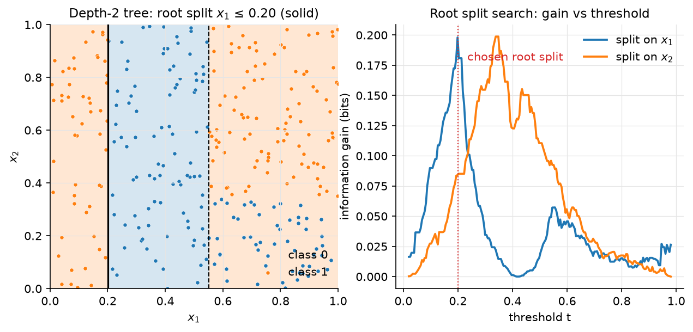
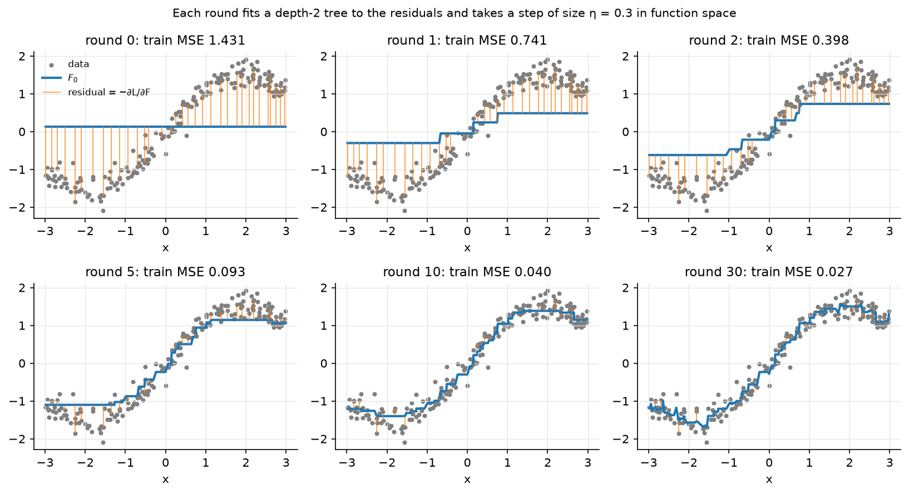

Trees & ensembles¶
Why this matters at staff level. Gradient-boosted trees are the default winner on tabular data at every company with a feature store, and they are the model you will be asked to compare against in any ranking, fraud or forecasting design. The depth questions are precise: derive boosting as gradient descent in function space, write XGBoost's second-order leaf weight \(w^* = -G/(H+\lambda)\) and split gain from scratch, explain why random forests reduce variance through de-correlation, and say when a neural net should replace the trees (and what it cost Airbnb to get there). Strong signal is being able to implement a boosted tree in NumPy and to name the systems tricks (histograms, leaf-wise growth, GOSS, EFB, ordered target statistics) that make the libraries fast.
TL;DR: the interview card¶
- CART: greedy axis-aligned splits. Impurities: entropy \(H = -\sum_k p_k\log p_k\), Gini \(1 - \sum_k p_k^2\), variance for regression. Gain = parent impurity − size-weighted child impurity. One split search is \(O(d\,N\log N)\) (sort + scan); a depth-\(D\) tree \(\approx O(d\,N\log N\cdot D)\).
- Trees: zero bias, huge variance; pruning (cost-complexity \(\alpha\cdot\#\text{leaves}\)) or depth limits trade them.
- Random forest: bagging + feature subsampling (\(\sqrt d\) per split). \(\boxed{\operatorname{Var}(\bar f) = \rho\sigma^2 + \tfrac{1-\rho}{M}\sigma^2}\), feature subsampling lowers \(\rho\), which is the term that does not vanish with \(M\). OOB error = free validation.
- Boosting = functional gradient descent: \(F_m = F_{m-1} + \eta f_m\) with \(f_m\) fitted to \(-\partial\ell/\partial F\) (residuals for squared loss).
- Newton boosting (XGBoost): second-order expansion \(\sum_i g_if(x_i) + \tfrac12h_if(x_i)^2 + \gamma T + \tfrac{\lambda}{2}\sum_j w_j^2\) gives \(\boxed{w_j^* = -\tfrac{G_j}{H_j+\lambda}}\), \(\text{obj}^* = -\tfrac12\sum_j\tfrac{G_j^2}{H_j+\lambda} + \gamma T\), split gain \(\tfrac12\big[\tfrac{G_L^2}{H_L+\lambda} + \tfrac{G_R^2}{H_R+\lambda} - \tfrac{G^2}{H+\lambda}\big] - \gamma\).
- LightGBM: histogram bins (\(O(\#\text{bins})\) per feature per split, histogram subtraction), leaf-wise growth, GOSS (keep large-gradient rows, subsample small ones and up-weight), EFB (bundle mutually exclusive sparse features). CatBoost: ordered target statistics and ordered boosting to remove target leakage; symmetric (oblivious) trees.
- Trees beat NNs on medium tabular data (Grinsztajn et al. 2022): robust to uninformative features, axis-aligned bias matches tabular irregularity, no need to learn rotations.
- Production: Airbnb search ranking (GBDT → NN after plateau), Facebook ads (GBDT + LR), Stripe Radar (LR → trees → DNN), Uber ETA (XGBoost → DeepETA), DoorDash (LightGBM forecasting).
1. Intuition first¶
Six loan applicants, two features, one label (default):
| income (k) | 20 | 30 | 45 | 50 | 80 | 90 |
|---|---|---|---|---|---|---|
| debt ratio | 0.6 | 0.2 | 0.5 | 0.1 | 0.4 | 0.1 |
| default | 1 | 1 | 1 | 0 | 0 | 0 |
A tree asks one yes/no question at a time. Try "income ≤ 47.5?": left = {20, 30, 45} all defaults (pure), right = {50, 80, 90} no defaults (pure). One question, zero impurity; information gain equals the parent entropy, \(1\) bit. Try "debt ≤ 0.3?": left = {30, 50, 90} with labels {1, 0, 0}, right = {20, 45, 80} with {1, 1, 0}; each child has entropy \(0.918\) bits, gain \(0.08\) bits. The greedy learner picks income. In the general case it scans every feature and every threshold, keeps the best, and recurses on each side until a stopping rule fires.
The two ensemble ideas are then simple to state. Bagging fits many deep trees on bootstrap resamples and averages them: each tree overfits differently, the average overfits less. Boosting fits shallow trees one after another, each to the errors of the current sum, and adds it with a small step: the sum is a gradient-descent trajectory in the space of functions.

Figure. Left: the axis-aligned partition a depth-2 tree carves out of the plane (solid = root split, dashed = children). Right: the information gain of every candidate threshold on each feature; the greedy learner takes the peak.
2. The math¶
Uses: entropy and KL (information theory), bias–variance decomposition (statistics), second-order Taylor expansions and Newton's method (optimization).
2.1 Decision trees¶
A tree partitions \(\R^d\) into axis-aligned boxes \(R_1, \dots, R_T\) and predicts a constant per box: \(f(x) = \sum_j w_j\,\mathbb 1[x \in R_j]\). For a node with \(n\) examples, class proportions \(p_k = n_k/n\), candidate split \((j, t)\) sending \(x_j \le t\) left:
with \(I \in \{H, G, \operatorname{Var}\}\). For entropy the gain is the mutual information between the label and the indicator \(\mathbb 1[x_j \le t]\). Gini is the expected error of a classifier that predicts a random label drawn from \(p\), and its first-order Taylor expansion around uniform matches entropy's, which is why the two almost always pick the same split (Gini is cheaper: no log). For regression, the leaf prediction is the mean and the impurity is the within-node variance; the gain is the between-child variance \(\frac{n_Ln_R}{n^2}(\bar y_L - \bar y_R)^2\).
Complexity. For one numeric feature, sort the node's values once (\(O(n\log n)\)) and scan thresholds while maintaining running class counts or running sums (\(O(n)\)), so a full split search is \(O(dn\log n)\); sorting can be done once globally and reused with index lists, giving \(O(dn)\) per node and \(O(dN\cdot\text{depth})\) per tree. Finding the optimal tree is NP-hard; greediness is the price of tractability and the reason a single tree is unstable (a small data change flips the root split and everything below).
Pruning. Grow deep, then minimise cost-complexity
\(\sum_{\text{leaves}} n_jI_j + \alpha T\) by collapsing subtrees whose removal raises
impurity by less than \(\alpha\) per leaf; pick \(\alpha\) by cross-validation. Modern
practice replaces pruning with max_depth, min_samples_leaf, and (in boosting)
the \(\gamma\) and \(\lambda\) penalties below, which prune during growth.
2.2 Random forests: why averaging helps only if trees disagree¶
Let \(f_1, \dots, f_M\) be identically distributed predictors (trees on bootstrap samples) with variance \(\sigma^2\) and pairwise correlation \(\rho\). Then
Meaning: the second term vanishes as \(M \to \infty\), the first does not. Bagging alone leaves \(\rho\) high because every bootstrap sample contains the same dominant feature and every tree splits on it at the root. Random forests choose each split from a random subset of \(m \approx \sqrt d\) features, forcing trees to use different features and driving \(\rho\) down at the cost of a slightly larger \(\sigma^2\) (each tree is a bit worse). Since the bias of a deep tree is near zero and averaging does not change bias, the ensemble is low-bias and low-variance.
Out-of-bag error. Each bootstrap sample omits about \(1 - (1-1/N)^N \to 1 - e^{-1} \approx 37\%\) of the rows. Predict each row using only the trees that did not see it: an unbiased generalisation estimate for free, no held-out set required.
2.3 Gradient boosting as functional gradient descent¶
We want \(F(x)\) minimising \(\mathcal L(F) = \sum_i \ell(y_i, F(x_i))\). Treat the vector of predictions \(F = (F(x_1), \dots, F(x_N))\) as the parameter. Steepest descent would move \(F \leftarrow F - \eta\, \nabla_F\mathcal L\) with \(\nabla_F\mathcal L = (\partial\ell/\partial F(x_i))_i =: g\). But we may only move along functions that a weak learner can represent, so we fit a tree \(f_m\) to the negative gradient \(-g\) (least squares: \(f_m \approx \argmin_f\sum_i(-g_i - f(x_i))^2\)) and take the step
For squared loss \(\ell = \tfrac12(y - F)^2\), \(-g_i = y_i - F(x_i)\) is the residual: "fit a tree to the residuals" is gradient descent. For logistic loss \(\ell = \log(1 + e^{F}) - yF\), \(-g_i = y_i - \sigma(F(x_i))\); for absolute loss \(-g_i = \operatorname{sign}(y_i - F(x_i))\), which is why L1 boosting is robust to outliers. Shrinkage \(\eta \in [0.01, 0.3]\) is the learning rate, and more rounds with smaller \(\eta\) generalise better, the same story as SGD.

Figure. Six snapshots of GradientBoostedTrees on a 1-D regression: the blue
curve is \(F_m\), the orange stems are the residuals each new tree will fit. Training MSE
falls monotonically because every round is a descent step.
2.4 Newton boosting: the XGBoost objective¶
Second-order Taylor expansion of the loss around the current prediction, plus a complexity penalty on the new tree \(f\) with \(T\) leaves and leaf weights \(w \in \R^T\):
Since \(f(x_i) = w_{q(x_i)}\) where \(q\) maps a point to its leaf, group the sum by leaf with \(G_j = \sum_{i\in R_j}g_i\), \(H_j = \sum_{i\in R_j}h_i\):
Each leaf is an independent 1-D quadratic. Differentiate in \(w_j\) and set to zero:
Meaning: the leaf weight is a Newton step, \(-(\text{gradient})/(\text{curvature} + \text{ridge})\), computed on the examples in that leaf. For squared loss \(h_i = 1\) and \(w_j^* = -G_j/(n_j + \lambda)\): the mean residual, shrunk. For logistic loss \(h_i = p_i(1-p_i)\), so leaves full of confident examples (small \(h\)) get larger steps for the same gradient, first-order boosting would not know this.
\(\mathcal L^*\) scores a tree structure. Splitting a leaf with \((G, H)\) into \((G_L, H_L)\) and \((G_R, H_R)\) changes the objective by
and the split is made only if the gain is positive: \(\gamma\) is a pruning threshold
applied during growth, \(\lambda\) shrinks leaf values and damps the gain of leaves
with little curvature mass, and min_child_weight bounds \(H_L, H_R\) from below (for
logistic loss that is a bound on \(\sum p(1-p)\), i.e. on the leaf's information, not
just its count). Split search sorts each feature once and computes the gain for
every threshold from prefix sums of \(g\) and \(h\), the implementation below does
exactly this in vectorised NumPy.
2.5 The engineering that made boosting fast¶
- Histogram splits (LightGBM, XGBoost
hist). Bin each feature into \(\le 255\) quantile buckets once; a split search per feature is then \(O(\#\text{bins})\) after an \(O(n)\) histogram build of \((G, H)\) per bin, and a child's histogram is the parent's minus the sibling's (histogram subtraction), so only the smaller child is ever computed. Memory drops from 8 bytes to 1 byte per value. - Leaf-wise (best-first) growth. Instead of growing all leaves at a depth (level-wise), always split the leaf with the largest gain. Reaches lower loss for the same number of leaves; can overfit on small data, hence
num_leavesandmin_data_in_leaf. - GOSS (gradient-based one-side sampling). Keep the top \(a\%\) of rows by \(|g|\), sample \(b\%\) of the rest and multiply their \(g, h\) by \((1-a)/b\) so the histogram stays unbiased. Rows with small gradients are already well fit and contribute little to the gain.
- EFB (exclusive feature bundling). Sparse features that are rarely non-zero simultaneously (one-hots) are merged into one dense feature with offset bins; the number of histograms drops from \(\#\text{features}\) to \(\#\text{bundles}\). Finding the optimal bundling is graph colouring (NP-hard); a greedy approximation with a conflict budget works.
- Ordered target statistics (CatBoost). Replacing a category by its mean target leaks the row's own label into its feature. CatBoost computes each row's statistic from a random permutation of the preceding rows only, and uses the same idea (ordered boosting) to compute gradients with models that never saw the row, removing the "prediction shift". Oblivious (symmetric) trees use the same split at every node of a level, giving 2^depth leaves indexed by a bit vector, very fast to evaluate.
- Sparsity-aware splits and weighted quantile sketch (XGBoost). A default direction for missing values learned per split; quantile bins weighted by \(h_i\) so that bins carry equal curvature mass.
2.6 When trees beat neural nets on tabular data¶
Grinsztajn, Oyallon & Varoquaux (NeurIPS 2022) benchmark 45 medium-size tabular datasets and find tree ensembles ahead of tuned deep models, with three explanations that you should be able to reproduce: (1) neural nets are biased toward smooth functions, while tabular targets are often irregular in a few coordinates; trees' piecewise-constant, axis-aligned bias fits that; (2) trees are robust to uninformative features (a split on noise has near-zero gain and is never taken; an MLP must learn to ignore it); (3) tabular data is not rotation-invariant, a random rotation of the features hurts MLPs far less than it hurts trees, and trees' loss under rotation is exactly the point: the original axes carry meaning. Neural nets win when there are \(\gg 10^5\) rows, when the features are embeddings or raw signals, when you need end-to-end training with other modalities, or when online updates and transfer matter (see Airbnb below).
3. Implementation¶
Three files: decision_tree.py (CART), random_forest.py, gradient_boosting.py
(Newton boosting with its own gradient-aware tree).
Split search (CART).
def best_split(X, y, task, criterion, n_classes, feature_indices=None, min_samples_leaf=1):
n, d = X.shape
parent = _node_impurity(y, task, criterion, n_classes)
features = np.arange(d) if feature_indices is None else feature_indices # (d',)
best = None
for j in features:
order = np.argsort(X[:, j], kind="stable") # (n,)
xs = X[order, j] # (n,) sorted feature values
ys = y[order] # (n,) labels in that order
for i in range(min_samples_leaf, n - min_samples_leaf + 1):
if i == 0 or i == n or xs[i - 1] == xs[i]:
continue # cannot split between equal values
left, right = ys[:i], ys[i:] # (i,), (n-i,)
child = (i / n) * _node_impurity(left, ...) + ((n - i) / n) * _node_impurity(right, ...)
gain = parent - child
if best is None or gain > best[2]:
best = (int(j), float(0.5 * (xs[i - 1] + xs[i])), float(gain))
return best
This is the readable \(O(dn^2)\) version: it recomputes child impurities from
scratch at each threshold. The feature_indices argument is the random-forest hook.
The Newton tree below shows the \(O(dn\log n)\) prefix-sum version.
Tree growth.
def _grow(self, X, y, depth):
n, d = X.shape
pure = ... # one class left, or zero variance
if depth >= self.max_depth or n < 2 * self.min_samples_leaf or pure:
return self._leaf(y)
feats = None
if self.max_features is not None and self.max_features < d:
feats = self.rng.choice(d, size=self.max_features, replace=False) # (max_features,)
split = best_split(X, y, self.task, self.criterion, self.n_classes, feats, self.min_samples_leaf)
if split is None or split[2] <= self.min_gain:
return self._leaf(y)
j, t, _ = split
mask = X[:, j] <= t # (n,) bool
node = Node(feature=j, threshold=t)
node.left = self._grow(X[mask], y[mask], depth + 1)
node.right = self._grow(X[~mask], y[~mask], depth + 1)
return node
Leaves store class proportions (K,) (so predict_proba is meaningful and forests
can average probabilities) or the mean for regression.
Random forest.
for m in range(self.n_trees):
idx = self.rng.integers(0, N, size=N) # (N,) bootstrap sample with replacement
oob = np.setdiff1d(np.arange(N), idx) # (N_oob,)
tree = DecisionTree(..., max_features=self._n_features(d), rng=...)
tree.fit(X[idx], y[idx])
if len(oob) > 0:
oob_votes[oob] += tree.predict_proba(X[oob]) # (N_oob, K)
oob_counts[oob] += 1
Bootstrap (integers with replacement), per-split feature subsampling (via
max_features inside the tree), and OOB accounting in one loop; after the loop the
OOB score is the accuracy (or \(R^2\)) of the accumulated OOB votes.
Newton tree: vectorised gain over all thresholds.
def _best_split(self, X, g, h):
n, d = X.shape
G, H = g.sum(), h.sum()
best = None
for j in range(d):
order = np.argsort(X[:, j], kind="stable") # (n,)
xs, gs, hs = X[order, j], g[order], h[order] # (n,), (n,), (n,)
G_L = np.cumsum(gs)[:-1] # (n-1,) prefix sums: left child gets first i examples
H_L = np.cumsum(hs)[:-1] # (n-1,)
G_R, H_R = G - G_L, H - H_L # (n-1,), (n-1,)
valid = (xs[:-1] != xs[1:]) & (H_L >= self.min_child_weight) & (H_R >= self.min_child_weight) # (n-1,)
gains = 0.5 * (G_L**2 / (H_L + self.lam) + G_R**2 / (H_R + self.lam) - G**2 / (H + self.lam)) - self.gamma # (n-1,)
gains = np.where(valid, gains, -np.inf)
i = int(gains.argmax())
...
One sort and two cumulative sums per feature give the gain at every threshold at
once, §2.4's formula applied to \(n - 1\) candidates in a single vectorised line. Leaves
are assigned leaf_weight(g.sum(), h.sum(), lam) \(= -G/(H+\lambda)\) before attempting a
split, so a node that finds no positive-gain split is already a correct leaf.
Boosting loop.
F = np.full(N, self.base_score) # (N,) current prediction
for _ in range(self.n_rounds):
g, h = self._grad_hess(F, y) # (N,), (N,)
tree = NewtonTree(self.max_depth, self.lam, self.gamma).fit(X[idx], g[idx], h[idx])
F = F + self.lr * tree.predict(X) # (N,)
self.trees.append(tree)
self.train_loss_.append(self._loss_value(F, y))
_grad_hess returns \((F - y, \mathbf 1)\) for squared loss and \((\sigma(F) - y, \sigma(F)(1-\sigma(F)))\)
for logistic loss; the base score is the mean (squared) or the prior log-odds
(logistic). Row subsampling (subsample < 1) is stochastic gradient boosting.
How you'd test it. tests/test_classical_trees.py: impurities at known values;
best_split finds a planted threshold with gain equal to the parent entropy;
a depth-3 tree solves XOR \(>97\%\); a regression tree fits a sine; the forest beats a
stump and reports OOB \(> 0.85\); leaf_weight and split_gain at hand-computed
values; a NewtonTree with a planted split returns \(-G/(H+\lambda)\) per side; boosting
beats a stump by \(4\times\) on MSE with a monotone training loss; logistic boosting
solves XOR with probabilities in \([0,1]\).
Full implementation: src/mlbook/classical/decision_tree.py
"""CART decision trees from scratch (classification and regression).
Impurity criteria: entropy, Gini (classification) and variance (regression).
Splits are axis-aligned thresholds chosen greedily; each split costs
``O(d · N log N)`` with the sort-and-scan trick used in :func:`best_split`.
Conventions: ``X`` (N, d), ``y`` (N,) integer labels in ``{0..K-1}`` for
classification or floats for regression.
"""
from __future__ import annotations
from dataclasses import dataclass
import numpy as np
# --------------------------------------------------------------------------- #
# Impurities
# --------------------------------------------------------------------------- #
def class_proportions(y: np.ndarray, n_classes: int) -> np.ndarray:
"""``y``: (n,) labels -> (K,) proportions ``p_k = n_k / n``."""
counts = np.bincount(y, minlength=n_classes).astype(float) # (K,)
return counts / max(len(y), 1) # (K,)
def entropy(p: np.ndarray) -> float:
"""``H(p) = -Σ_k p_k log2 p_k`` with ``0 log 0 = 0``. ``p``: (K,)."""
nz = p[p > 0]
return float(-(nz * np.log2(nz)).sum())
def gini(p: np.ndarray) -> float:
"""``G(p) = 1 - Σ_k p_k^2`` = probability two random draws disagree. ``p``: (K,)."""
return float(1.0 - (p * p).sum())
def variance(y: np.ndarray) -> float:
"""Mean squared deviation from the mean. ``y``: (n,) floats."""
if len(y) == 0:
return 0.0
return float(((y - y.mean()) ** 2).mean())
# --------------------------------------------------------------------------- #
# Split search
# --------------------------------------------------------------------------- #
def _node_impurity(y: np.ndarray, task: str, criterion: str, n_classes: int) -> float:
if task == "regression":
return variance(y)
p = class_proportions(y, n_classes) # (K,)
return entropy(p) if criterion == "entropy" else gini(p)
def best_split(
X: np.ndarray, y: np.ndarray, task: str, criterion: str, n_classes: int,
feature_indices: np.ndarray | None = None, min_samples_leaf: int = 1,
) -> tuple[int, float, float] | None:
"""Return ``(feature, threshold, gain)`` of the best axis-aligned split, or ``None``.
Gain = ``I(parent) - (n_L/n) I(left) - (n_R/n) I(right)``: information gain
for entropy, Gini decrease for Gini, variance reduction for regression.
Candidate thresholds are midpoints between consecutive distinct sorted values.
``X``: (n, d), ``y``: (n,). ``feature_indices``: optional subset of columns
(used by random forests).
"""
n, d = X.shape
parent = _node_impurity(y, task, criterion, n_classes)
features = np.arange(d) if feature_indices is None else feature_indices # (d',)
best: tuple[int, float, float] | None = None
for j in features:
order = np.argsort(X[:, j], kind="stable") # (n,)
xs = X[order, j] # (n,) sorted feature values
ys = y[order] # (n,) labels in that order
for i in range(min_samples_leaf, n - min_samples_leaf + 1):
if i == 0 or i == n or xs[i - 1] == xs[i]:
continue # cannot split between equal values
left, right = ys[:i], ys[i:] # (i,), (n-i,)
child = (i / n) * _node_impurity(left, task, criterion, n_classes) + (
(n - i) / n
) * _node_impurity(right, task, criterion, n_classes)
gain = parent - child
if best is None or gain > best[2]:
best = (int(j), float(0.5 * (xs[i - 1] + xs[i])), float(gain))
return best
# --------------------------------------------------------------------------- #
# Tree
# --------------------------------------------------------------------------- #
@dataclass
class Node:
"""A tree node. Leaves carry ``value``: class proportions (K,) or the mean (float)."""
feature: int = -1
threshold: float = 0.0
left: "Node | None" = None
right: "Node | None" = None
value: np.ndarray | float | None = None
@property
def is_leaf(self) -> bool:
return self.left is None
class DecisionTree:
"""CART tree. ``task`` in {"classification", "regression"};
``criterion`` in {"gini", "entropy"} (ignored for regression).
``fit(X (N, d), y (N,))``; ``predict(X (N, d)) -> (N,)``;
``predict_proba(X) -> (N, K)`` for classification.
"""
def __init__(
self, task: str = "classification", criterion: str = "gini", max_depth: int = 5,
min_samples_leaf: int = 1, min_gain: float = 0.0, max_features: int | None = None,
rng: np.random.Generator | None = None,
) -> None:
self.task = task
self.criterion = criterion
self.max_depth = max_depth
self.min_samples_leaf = min_samples_leaf
self.min_gain = min_gain
self.max_features = max_features
self.rng = rng if rng is not None else np.random.default_rng(0)
self.root: Node | None = None
self.n_classes = 0
def _leaf(self, y: np.ndarray) -> Node:
if self.task == "regression":
return Node(value=float(y.mean()))
return Node(value=class_proportions(y, self.n_classes)) # value: (K,)
def _grow(self, X: np.ndarray, y: np.ndarray, depth: int) -> Node:
n, d = X.shape
pure = (self.task == "classification" and len(np.unique(y)) == 1) or (
self.task == "regression" and variance(y) == 0.0
)
if depth >= self.max_depth or n < 2 * self.min_samples_leaf or pure:
return self._leaf(y)
feats = None
if self.max_features is not None and self.max_features < d:
feats = self.rng.choice(d, size=self.max_features, replace=False) # (max_features,)
split = best_split(X, y, self.task, self.criterion, self.n_classes, feats, self.min_samples_leaf)
if split is None or split[2] <= self.min_gain:
return self._leaf(y)
j, t, _ = split
mask = X[:, j] <= t # (n,) bool
node = Node(feature=j, threshold=t)
node.left = self._grow(X[mask], y[mask], depth + 1)
node.right = self._grow(X[~mask], y[~mask], depth + 1)
return node
def fit(self, X: np.ndarray, y: np.ndarray) -> "DecisionTree":
if self.task == "classification":
y = y.astype(int)
self.n_classes = int(y.max()) + 1
self.root = self._grow(X, y, depth=0)
return self
def _predict_one(self, x: np.ndarray) -> np.ndarray | float:
node = self.root
while not node.is_leaf: # type: ignore[union-attr]
node = node.left if x[node.feature] <= node.threshold else node.right # type: ignore[union-attr]
return node.value # type: ignore[union-attr,return-value]
def predict_proba(self, X: np.ndarray) -> np.ndarray:
"""``X``: (N, d) -> (N, K) leaf class proportions."""
return np.stack([self._predict_one(x) for x in X], axis=0) # (N, K)
def predict(self, X: np.ndarray) -> np.ndarray:
"""``X``: (N, d) -> (N,) labels (argmax of leaf proportions) or leaf means."""
if self.task == "regression":
return np.array([self._predict_one(x) for x in X]) # (N,)
return self.predict_proba(X).argmax(axis=1) # (N,)
def depth(self) -> int:
def _d(node: Node | None) -> int:
if node is None or node.is_leaf:
return 0
return 1 + max(_d(node.left), _d(node.right))
return _d(self.root)
Full implementation: src/mlbook/classical/random_forest.py
"""Random forest: bagging + per-split feature subsampling + out-of-bag error.
Why the variance drops: averaging ``M`` estimators with variance ``σ²`` and
pairwise correlation ``ρ`` gives ``Var = ρ σ² + (1 - ρ) σ² / M``. Bagging alone
leaves ``ρ`` high (the same strong features dominate every tree); subsampling
features at each split de-correlates the trees and drives the first term down.
"""
from __future__ import annotations
import numpy as np
from .decision_tree import DecisionTree
class RandomForest:
"""Bagged CART trees with feature subsampling.
``fit(X (N, d), y (N,))``; ``predict(X (N, d)) -> (N,)``.
After ``fit``, ``oob_score_`` is the out-of-bag accuracy (classification) or
out-of-bag R² (regression).
"""
def __init__(
self, n_trees: int = 50, task: str = "classification", max_depth: int = 8,
max_features: int | str | None = "sqrt", min_samples_leaf: int = 1, seed: int = 0,
) -> None:
self.n_trees = n_trees
self.task = task
self.max_depth = max_depth
self.max_features = max_features
self.min_samples_leaf = min_samples_leaf
self.rng = np.random.default_rng(seed)
self.trees: list[DecisionTree] = []
self.oob_score_: float | None = None
self.n_classes = 0
def _n_features(self, d: int) -> int:
if self.max_features is None:
return d
if self.max_features == "sqrt":
return max(1, int(np.sqrt(d)))
return int(self.max_features)
def fit(self, X: np.ndarray, y: np.ndarray) -> "RandomForest":
N, d = X.shape
if self.task == "classification":
y = y.astype(int)
self.n_classes = int(y.max()) + 1
oob_votes = np.zeros((N, self.n_classes)) # (N, K) accumulated OOB proportions
else:
oob_votes = np.zeros(N) # (N,) accumulated OOB predictions
oob_counts = np.zeros(N) # (N,) how many trees saw each example as OOB
self.trees = []
for m in range(self.n_trees):
idx = self.rng.integers(0, N, size=N) # (N,) bootstrap sample with replacement
oob = np.setdiff1d(np.arange(N), idx) # (N_oob,)
tree = DecisionTree(
task=self.task, max_depth=self.max_depth, min_samples_leaf=self.min_samples_leaf,
max_features=self._n_features(d), rng=np.random.default_rng(self.rng.integers(1 << 31)),
)
tree.n_classes = self.n_classes
tree.fit(X[idx], y[idx])
self.trees.append(tree)
if len(oob) > 0:
if self.task == "classification":
oob_votes[oob] += tree.predict_proba(X[oob]) # (N_oob, K)
else:
oob_votes[oob] += tree.predict(X[oob]) # (N_oob,)
oob_counts[oob] += 1
seen = oob_counts > 0 # (N,) bool
if self.task == "classification":
pred = oob_votes[seen].argmax(axis=1) # (N_seen,)
self.oob_score_ = float((pred == y[seen]).mean())
else:
pred = oob_votes[seen] / oob_counts[seen] # (N_seen,)
ss_res = ((y[seen] - pred) ** 2).sum()
ss_tot = ((y[seen] - y[seen].mean()) ** 2).sum()
self.oob_score_ = float(1.0 - ss_res / ss_tot)
return self
def predict_proba(self, X: np.ndarray) -> np.ndarray:
"""Average of per-tree leaf proportions. ``X``: (N, d) -> (N, K)."""
probs = np.zeros((X.shape[0], self.n_classes)) # (N, K)
for tree in self.trees:
probs += tree.predict_proba(X) # (N, K)
return probs / len(self.trees) # (N, K)
def predict(self, X: np.ndarray) -> np.ndarray:
"""``X``: (N, d) -> (N,): majority vote (classification) or mean (regression)."""
if self.task == "classification":
return self.predict_proba(X).argmax(axis=1) # (N,)
preds = np.stack([tree.predict(X) for tree in self.trees], axis=0) # (M, N)
return preds.mean(axis=0) # (N,)
Full implementation: src/mlbook/classical/gradient_boosting.py
"""Gradient-boosted trees with Newton (second-order) leaf weights, XGBoost style.
Round ``m`` fits a tree ``f_m`` to the second-order Taylor expansion of the loss
around the current prediction ``F_{m-1}``:
L ≈ Σ_i [ g_i f(x_i) + ½ h_i f(x_i)² ] + γ T + ½ λ Σ_leaves w_j²
with ``g_i = ∂ℓ/∂F``, ``h_i = ∂²ℓ/∂F²``. For a fixed tree structure the optimal
leaf weight and the resulting objective are
w_j* = -G_j / (H_j + λ), obj* = -½ Σ_j G_j² / (H_j + λ) + γ T,
so the gain of a split is ``½ [G_L²/(H_L+λ) + G_R²/(H_R+λ) - G²/(H+λ)] - γ``.
Losses: ``"squared"`` (g = F - y, h = 1) and ``"logistic"`` (g = σ(F) - y,
h = σ(F)(1 - σ(F))).
"""
from __future__ import annotations
from dataclasses import dataclass
import numpy as np
from .logistic_regression import sigmoid
@dataclass
class _NewtonNode:
feature: int = -1
threshold: float = 0.0
left: "_NewtonNode | None" = None
right: "_NewtonNode | None" = None
weight: float = 0.0
@property
def is_leaf(self) -> bool:
return self.left is None
def leaf_weight(G: float, H: float, lam: float) -> float:
"""``w* = -G / (H + λ)``: the Newton step for one leaf."""
return -G / (H + lam)
def split_gain(G_L: float, H_L: float, G_R: float, H_R: float, lam: float, gamma: float) -> float:
"""``½ [G_L²/(H_L+λ) + G_R²/(H_R+λ) - (G_L+G_R)²/(H_L+H_R+λ)] - γ``."""
G, H = G_L + G_R, H_L + H_R
return 0.5 * (G_L**2 / (H_L + lam) + G_R**2 / (H_R + lam) - G**2 / (H + lam)) - gamma
class NewtonTree:
"""A regression tree grown on (g, h) pairs with the XGBoost gain and leaf weights.
``fit(X (N, d), g (N,), h (N,))``; ``predict(X (N, d)) -> (N,)`` leaf weights.
"""
def __init__(self, max_depth: int = 3, lam: float = 1.0, gamma: float = 0.0, min_child_weight: float = 1.0) -> None:
self.max_depth = max_depth
self.lam = lam
self.gamma = gamma
self.min_child_weight = min_child_weight # minimum Σ h in a leaf (≈ min samples)
self.root: _NewtonNode | None = None
def _best_split(self, X: np.ndarray, g: np.ndarray, h: np.ndarray) -> tuple[int, float, float] | None:
n, d = X.shape
G, H = g.sum(), h.sum()
best: tuple[int, float, float] | None = None
for j in range(d):
order = np.argsort(X[:, j], kind="stable") # (n,)
xs, gs, hs = X[order, j], g[order], h[order] # (n,), (n,), (n,)
G_L = np.cumsum(gs)[:-1] # (n-1,) prefix sums: left child gets first i examples
H_L = np.cumsum(hs)[:-1] # (n-1,)
G_R, H_R = G - G_L, H - H_L # (n-1,), (n-1,)
valid = (xs[:-1] != xs[1:]) & (H_L >= self.min_child_weight) & (H_R >= self.min_child_weight) # (n-1,)
if not valid.any():
continue
gains = 0.5 * (G_L**2 / (H_L + self.lam) + G_R**2 / (H_R + self.lam) - G**2 / (H + self.lam)) - self.gamma # (n-1,)
gains = np.where(valid, gains, -np.inf)
i = int(gains.argmax())
if best is None or gains[i] > best[2]:
best = (j, float(0.5 * (xs[i] + xs[i + 1])), float(gains[i]))
return best
def _grow(self, X: np.ndarray, g: np.ndarray, h: np.ndarray, depth: int) -> _NewtonNode:
node = _NewtonNode(weight=leaf_weight(g.sum(), h.sum(), self.lam))
if depth >= self.max_depth or len(g) < 2:
return node
split = self._best_split(X, g, h)
if split is None or split[2] <= 0.0:
return node
j, t, _ = split
mask = X[:, j] <= t # (n,) bool
node.feature, node.threshold = j, t
node.left = self._grow(X[mask], g[mask], h[mask], depth + 1)
node.right = self._grow(X[~mask], g[~mask], h[~mask], depth + 1)
return node
def fit(self, X: np.ndarray, g: np.ndarray, h: np.ndarray) -> "NewtonTree":
self.root = self._grow(X, g, h, depth=0)
return self
def predict(self, X: np.ndarray) -> np.ndarray:
out = np.empty(X.shape[0]) # (N,)
for i, x in enumerate(X):
node = self.root
while not node.is_leaf: # type: ignore[union-attr]
node = node.left if x[node.feature] <= node.threshold else node.right # type: ignore[union-attr]
out[i] = node.weight # type: ignore[union-attr]
return out
class GradientBoostedTrees:
"""Newton boosting: ``F_m = F_{m-1} + η f_m`` with ``f_m`` a :class:`NewtonTree`.
``loss`` in {"squared", "logistic"}. ``fit(X (N, d), y (N,))``;
``predict_raw(X) -> (N,)`` returns ``F_M``; ``predict`` thresholds for logistic.
``train_loss_`` records the loss after every round (monotone for small η).
"""
def __init__(
self, n_rounds: int = 100, learning_rate: float = 0.1, max_depth: int = 3,
lam: float = 1.0, gamma: float = 0.0, loss: str = "squared", subsample: float = 1.0, seed: int = 0,
) -> None:
self.n_rounds = n_rounds
self.lr = learning_rate
self.max_depth = max_depth
self.lam = lam
self.gamma = gamma
self.loss = loss
self.subsample = subsample
self.rng = np.random.default_rng(seed)
self.trees: list[NewtonTree] = []
self.base_score = 0.0
self.train_loss_: list[float] = []
def _grad_hess(self, F: np.ndarray, y: np.ndarray) -> tuple[np.ndarray, np.ndarray]:
"""First and second derivatives of the per-example loss w.r.t. ``F``. Both (N,)."""
if self.loss == "squared":
return F - y, np.ones_like(F)
p = sigmoid(F) # (N,)
return p - y, p * (1.0 - p)
def _loss_value(self, F: np.ndarray, y: np.ndarray) -> float:
if self.loss == "squared":
return float(0.5 * ((F - y) ** 2).mean())
return float(np.mean(np.logaddexp(0.0, F) - y * F)) # -[y log σ(F) + (1-y) log(1-σ(F))]
def fit(self, X: np.ndarray, y: np.ndarray) -> "GradientBoostedTrees":
N = X.shape[0]
if self.loss == "squared":
self.base_score = float(y.mean())
else:
p0 = np.clip(y.mean(), 1e-6, 1 - 1e-6)
self.base_score = float(np.log(p0 / (1 - p0))) # log-odds of the prior
F = np.full(N, self.base_score) # (N,) current prediction
self.trees, self.train_loss_ = [], []
for _ in range(self.n_rounds):
g, h = self._grad_hess(F, y) # (N,), (N,)
idx = np.arange(N)
if self.subsample < 1.0:
idx = self.rng.choice(N, size=int(self.subsample * N), replace=False) # (N_sub,)
tree = NewtonTree(self.max_depth, self.lam, self.gamma).fit(X[idx], g[idx], h[idx])
F = F + self.lr * tree.predict(X) # (N,)
self.trees.append(tree)
self.train_loss_.append(self._loss_value(F, y))
return self
def predict_raw(self, X: np.ndarray) -> np.ndarray:
"""``F_M(x) = base + η Σ_m f_m(x)``. ``X``: (N, d) -> (N,)."""
F = np.full(X.shape[0], self.base_score) # (N,)
for tree in self.trees:
F = F + self.lr * tree.predict(X) # (N,)
return F
def predict_proba(self, X: np.ndarray) -> np.ndarray:
"""``σ(F_M(x))`` for the logistic loss. ``X``: (N, d) -> (N,)."""
return sigmoid(self.predict_raw(X))
def predict(self, X: np.ndarray) -> np.ndarray:
if self.loss == "logistic":
return (self.predict_raw(X) >= 0.0).astype(int) # (N,)
return self.predict_raw(X)
Retype by hand¶
Reproduce from memory:
| Symbol (file) | What it must do | Target time |
|---|---|---|
entropy, gini, variance, class_proportions (decision_tree.py) |
the three impurities | 4 min |
best_split (decision_tree.py) |
sort, scan thresholds, size-weighted child impurity | 12 min |
DecisionTree (decision_tree.py) |
recursive _grow, leaves as proportions/means, predict |
20 min |
RandomForest (random_forest.py) |
bootstrap, max_features, OOB accumulation |
15 min |
leaf_weight, split_gain (gradient_boosting.py) |
\(-G/(H+\lambda)\); the gain formula | 3 min |
NewtonTree (gradient_boosting.py) |
prefix-sum gain over all thresholds, recursive growth | 20 min |
GradientBoostedTrees (gradient_boosting.py) |
\(g, h\) for squared/logistic; \(F \mathrel{+}= \eta f_m\); loss history | 12 min |
Fine to just read: Node, _NewtonNode, depth(), predict_proba plumbing.
Check with pytest tests/test_classical_trees.py -q. All three files from blank:
90 minutes; NewtonTree + GradientBoostedTrees alone: 35 minutes.
4. Systems view: cost, failure modes, trade-offs¶
| Training cost | Inference | Parallelism | Typical size | |
|---|---|---|---|---|
| Single tree | \(O(dN\log N\cdot D)\) | \(O(D)\) | across features | 1 tree, depth 10–30 |
| Random forest | \(M\times\) tree (trees independent) | \(O(MD)\) | across trees (embarrassing) | 100–1000 deep trees |
| Gradient boosting | \(M\times\) tree (sequential) | \(O(MD)\) | across features/histogram bins, data-parallel histograms | 100–5000 shallow trees |
| Histogram GBDT | \(O(dN)\) bin + \(O(d\cdot\#\text{bins})\) per split | same | GPU-friendly | same |
Failure modes to name:
- Extrapolation. Trees predict a constant outside the training range (a house 3× bigger than any seen gets the max leaf). Linear models extrapolate; pick per use case, or feed trees a linear residual.
- High-cardinality categoricals. One-hot explodes the feature count and each level gets little data; target encoding leaks unless done "ordered" (CatBoost) or out-of-fold.
- Boosting overfits with too many rounds / too-deep trees. Early stopping on a validation set is the standard fix;
min_child_weight,subsample,colsampleand \(\lambda, \gamma\) are the knobs. - Random forests plateau. Once \(M\) is large enough the \(\rho\sigma^2\) floor dominates; more trees cannot help, only lower correlation (fewer features per split) can.
- Feature drift. Splits are literal thresholds on raw values; a re-scaled upstream feature silently reroutes every row. Monitor feature distributions.
- Probabilities are not calibrated out of a forest (votes are pushed toward 0.5) or a shrunk boosting model (pushed away); apply Platt/isotonic (previous chapter).
- Latency. 2000 trees × depth 8 is 16k comparisons per row; fine at 100µs, not for a 10 ms budget over 10k candidates. Compile trees to branch-free code, quantise thresholds, or distil into a small MLP.
When to use what (decision rule). Tabular, \(10^3\)–\(10^7\) rows, heterogeneous hand-built features, need a strong model fast → gradient boosting (LightGBM/XGBoost/ CatBoost; CatBoost first if categoricals dominate). Need uncertainty or a very robust default with no tuning → random forest. Need interpretability or monotonic constraints → single shallow tree / GBDT with monotone constraints. Raw signals (pixels, audio, text), \(\gg 10^7\) rows, multi-modal inputs, transfer learning, or online updates → neural nets. Best of both → GBDT leaves as features into a linear or neural model (Facebook), or a NN with a GBDT teacher.
5. In production¶
Airbnb: search ranking, from GBDT to neural networks
Problem: rank listings for a search. History: the initial gains came from a gradient-boosted decision tree ranker; those gains plateaued. What they built: a sequence of neural rankers, and the paper is candid about the failures. A first NN that replicated the GBDT on hand-crafted features did not beat it. The gains came once they had learned what listing-ID embeddings overfit to, switched to a Lambdarank loss, and fed the GBDT's own prediction in as a feature during the transition. Trade-off: NNs removed feature-engineering bottlenecks and let them scale with data, at the price of far more tooling (feature normalisation, output monotonicity, debugging). Haldar et al., "Applying Deep Learning to Airbnb Search", KDD 2019, arXiv:1810.09591.
Facebook: boosted trees as feature transformers for ads
What they built: each boosted tree's leaf index becomes a categorical feature for a logistic regression; +3% normalised-entropy improvement over either model alone; the trees are retrained infrequently, the linear layer online. Why: trees discover feature crosses without manual engineering; the linear model stays fresh and calibrated. He et al., ADKDD 2014. ai.meta.com.
Stripe: Radar
What they built: fraud scoring over 1000+ features in under 100 ms, evolving from logistic regression through tree ensembles to a deep network; the post describes tree models as the workhorse for years and the DNN transition as driven by measured improvements and the ability to learn from Stripe's whole network. Drapeau, 2023, stripe.dev.
Uber: XGBoost ETA baseline, then DeepETA
Problem: correct the routing engine's ETA with a residual model, globally, in milliseconds. History: the incumbent was an XGBoost model; DeepETA's stated goal was to beat its MAE while serving at Uber scale. What replaced it: a Transformer-style encoder over bucketised features (the blog explains they discretise continuous inputs, which puts a tree-like inductive bias inside the network). Uber Engineering, 2022, uber.com. Uber's Michelangelo platform post lists tree models among the first-class supported model types, uber.com.
DoorDash: LightGBM for regional forecasting
DoorDash reformulated supply/demand forecasting as regression and used LightGBM to train thousands of regional forecasts in one run, choosing it for iteration speed. DoorDash Engineering, careersatdoordash.com.
6. Interview questions and strong answers¶
Derive the XGBoost leaf weight and split gain.
Second-order Taylor of the loss in the new tree's output, add \(\gamma T + \tfrac\lambda2\norm{w}^2\), group by leaf into \(G_j, H_j\): each leaf is a scalar quadratic \(G_jw + \tfrac12(H_j+\lambda)w^2\), minimised at \(w^* = -G_j/(H_j+\lambda)\) with value \(-\tfrac12G_j^2/(H_j+\lambda)\). Gain of a split = value before − value after − \(\gamma\). Staff follow-up: why second order? Newton steps per leaf use the loss's curvature. For logistic loss, leaves of confident examples (\(h\) small) get bigger moves for the same gradient, and one code path handles any twice-differentiable loss, ranking losses included. What does \(\lambda\) do to the gain? It discounts leaves with small \(H\), meaning few or uninformative examples. That is a built-in prior against splits on tiny groups.
Why do random forests work, quantitatively?
\(\operatorname{Var}(\bar f) = \rho\sigma^2 + (1-\rho)\sigma^2/M\). Bagging attacks the second term; feature subsampling attacks \(\rho\), the term \(M\) cannot touch. Deep trees keep bias near zero, so the ensemble is low-bias, low-variance. Follow-up: why \(\sqrt d\)? An empirical default; lower \(m\) lowers \(\rho\) but raises \(\sigma^2\) (each tree is starved of the best features). Tune it with OOB error, which is free.
Boosting vs bagging: which reduces bias, which reduces variance?
Bagging averages high-variance, low-bias learners: variance reduction. Boosting adds low-variance, high-bias learners (stumps, depth ≤ 6) along a descent path: bias reduction, with variance controlled by shrinkage, subsampling and early stopping. Follow-up: why are boosted trees shallow? Depth controls the interaction order the model can express; depth 4–6 captures most real interactions, and deeper trees make each round overfit the residual noise.
Explain the LightGBM speedups.
Histograms: bin values once, gain per feature is \(O(\#\text{bins})\), child histograms by subtraction. Leaf-wise growth: spend leaves where the gain is. GOSS: rows with small gradients are subsampled and re-weighted, keeping the gain estimate unbiased. EFB: bundle mutually exclusive sparse features. Follow-up: what does CatBoost fix that these don't? Target leakage in categorical encodings and the gradient's "prediction shift". Both fixes come from ordered statistics on random permutations.
When would you replace the GBDT ranker with a neural net?
When the GBDT has plateaued and the constraint is feature engineering; when inputs are embeddings/sequences/images; when you need joint training with other towers or online learning. Be honest about the cost (Airbnb's first NN did not beat the GBDT) and keep the GBDT as a feature or teacher during transition. Follow-up: what would make you keep the trees? \(< 10^6\) rows, tabular features with meaningful axes, tight latency, a small team.
Your boosted model's probabilities are badly calibrated. Why?
Shrinkage and early stopping mean the logits never reach the MLE; the model is under-confident, and with reweighting it drifts further. Fit Platt or isotonic on held-out data. Random forests have the opposite defect: vote fractions cluster near 0.5.
How does a tree handle missing values?
XGBoost learns a default direction per split from the rows that have the value (sparsity-aware split); LightGBM similarly. Alternatives: impute plus an indicator feature, or surrogate splits (CART). Never drop rows silently in a production feature pipeline. The missingness is usually informative.
7. Exercises¶
★ Exercise 1. Show that for binary labels with proportion \(p\), Gini \(= 2p(1-p)\) and that the second-order Taylor expansion of the entropy (in nats) around \(p = \tfrac12\) is \(\log 2 - 2(p - \tfrac12)^2\), i.e. proportional to Gini up to a constant.
Solution
\(1 - p^2 - (1-p)^2 = 2p - 2p^2 = 2p(1-p)\). For entropy \(H(p) = -p\log p - (1-p)\log(1-p)\), \(H(\tfrac12) = \log 2\), \(H'(\tfrac12) = 0\), \(H''(p) = -\frac{1}{p(1-p)}\) so \(H''(\tfrac12) = -4\), giving \(H \approx \log 2 - 2(p-\tfrac12)^2\). Since \(2p(1-p) = \tfrac12 - 2(p-\tfrac12)^2\), both are the same downward parabola shifted.
★★ Exercise 2. Derive the variance-reduction gain for a regression split: \(\operatorname{Var}(\text{node}) - \frac{n_L}{n}\operatorname{Var}(L) - \frac{n_R}{n}\operatorname{Var}(R) = \frac{n_Ln_R}{n^2}(\bar y_L - \bar y_R)^2\).
Solution
Law of total variance: \(\operatorname{Var}(\text{node}) = \E[\operatorname{Var}(y\mid\text{side})] + \operatorname{Var}(\E[y\mid\text{side}])\). The first term is the weighted child variance; the second is the variance of a two-point distribution taking \(\bar y_L\) w.p. \(n_L/n\) and \(\bar y_R\) w.p. \(n_R/n\), which equals \(\frac{n_L}{n}\frac{n_R}{n}(\bar y_L - \bar y_R)^2\).
★★ Exercise 3 (coding). Add a "huber" loss to GradientBoostedTrees
(\(\ell = \tfrac12r^2\) for \(|r| \le \delta\), \(\delta|r| - \tfrac12\delta^2\) otherwise, \(r = F - y\)) and show on
data with 5% gross outliers that its test MSE on clean points beats squared loss.
Solution
Gradient \(g = \operatorname{clip}(F - y, -\delta, \delta)\), Hessian \(h = \mathbb 1[|F - y| \le \delta]\)
(add a small floor, e.g. h = np.maximum(h, 1e-3), so \(H_j + \lambda\) never
vanishes). In _grad_hess:
if self.loss == "huber":
r = F - y
return np.clip(r, -self.delta, self.delta), np.maximum((np.abs(r) <= self.delta).astype(float), 1e-3)
y = sin(x) + noise, replace 5% of y with +20, fit both
losses with 100 rounds, evaluate MSE on the un-corrupted points; Huber should be
lower because outliers contribute a bounded gradient \(\pm\delta\) instead of a
residual of \(\approx 20\).
★★ Exercise 4. Prove that out-of-bag samples make up \(\approx 36.8\%\) of the data for large \(N\), and explain why OOB error slightly overestimates the error of the full forest.
Solution
A given row is missed by one draw with probability \(1 - 1/N\), by all \(N\) draws with probability \((1 - 1/N)^N \to e^{-1} \approx 0.368\). Each OOB prediction uses only \(\approx 0.368M\) trees, i.e. a smaller forest with more variance than the full one, so its error is pessimistic; the bias vanishes as \(M\) grows.
★★★ Exercise 5. Show that gradient boosting with squared loss, shrinkage \(\eta\), and linear weak learners fitted by OLS on the same fixed design \(X\) is exactly gradient descent on the OLS objective with step \(\eta\) preconditioned by \((X^TX)^{-1}\) , i.e. it converges to the OLS solution and the number of rounds acts as an early-stopping regulariser.
Solution
Residual \(r_m = y - Xw_{m-1}\); the OLS fit to \(r_m\) is \(\Delta = (X^TX)^{-1}X^Tr_m\), so \(w_m = w_{m-1} + \eta(X^TX)^{-1}X^T(y - Xw_{m-1}) = w_{m-1} - \eta(X^TX)^{-1}\nabla_w\tfrac12\norm{Xw-y}^2\). That is Newton's method scaled by \(\eta\); in the eigenbasis of \(X^TX\) every component of the error contracts by \((1-\eta)\) per round, so after \(m\) rounds \(w_m = (1 - (1-\eta)^m)\,w_{\text{OLS}}\) (starting from \(0\)): a uniform shrinkage toward zero, like ridge but with equal shrinkage across directions.
References¶
- Breiman, L. "Random Forests." Machine Learning 45, 2001. Springer
- Friedman, J. "Greedy Function Approximation: A Gradient Boosting Machine." Annals of Statistics 29(5), 2001. Project Euclid
- Chen, T., Guestrin, C. "XGBoost: A Scalable Tree Boosting System." KDD 2016. arXiv:1603.02754; tutorial: Introduction to Boosted Trees
- Ke, G. et al. "LightGBM: A Highly Efficient Gradient Boosting Decision Tree." NeurIPS 2017. proceedings.neurips.cc; Features docs
- Prokhorenkova, L. et al. "CatBoost: unbiased boosting with categorical features." NeurIPS 2018. arXiv:1706.09516
- Grinsztajn, L., Oyallon, E., Varoquaux, G. "Why do tree-based models still outperform deep learning on tabular data?" NeurIPS 2022. arXiv:2207.08815
- Haldar, M. et al. "Applying Deep Learning to Airbnb Search." KDD 2019. arXiv:1810.09591
- He, X. et al. "Practical Lessons from Predicting Clicks on Ads at Facebook." ADKDD 2014. ai.meta.com
- Drapeau, R. "How we built it: Stripe Radar." 2023. stripe.dev
- Uber Engineering. "DeepETA: How Uber Predicts Arrival Times Using Deep Learning." 2022. uber.com
- Hastie, Tibshirani, Friedman. The Elements of Statistical Learning, ch. 9, 10, 15. Free PDF